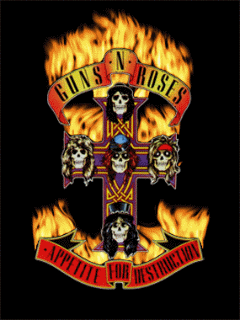
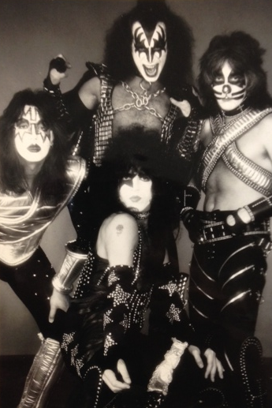
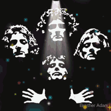
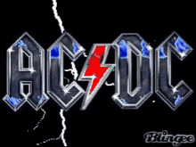

El rock es un amplio género musical originado en la década de 1950 en Estados Unidos. Nació de la fusión entre el blues, el rhythm and blues (R&B) y el country. A lo largo de las décadas, ha evolucionado en múltiples subgéneros y ha servido como un poderoso movimiento cultural y de protesta a nivel global
Guns N' Roses es una banda estadounidense de hard rock formada en Hollywood, Los Ángeles, en la zona de Sunset Strip, en 1985. Fue fundada por el vocalista y pianista Axl Rose, y el guitarrista Izzy Stradlin. Es una de las bandas de rock más exitosas de todos los tiempos, habiendo vendido más de cien millones de discos, es considerada ícono global de la música y forma parte del prestigioso Salón de la Fama del Rock and Roll. Asimismo, la banda es uno de los números artísticos con más galardones, legado y repercusión mundial hasta la fecha. También Guns N' Roses es considerada por muchos como una de las bandas más influyentes de la historia debido a su gran legado musical.

iss (estilizado KISS) fue una banda estadounidense de rock formada en Nueva York en enero de 1973 por el bajista Gene Simmons, el guitarrista Paul Stanley y el batería Peter Criss, a los que más tarde se uniría el guitarrista Ace Frehley. Conocidos por su maquillaje facial y su extravagante vestuario, el grupo se dio a conocer al público a mediados de los años 1970 gracias a sus actuaciones en directo, en las que incluían pirotecnia, llamaradas, cañones, baterías elevadoras, guitarras con humo y sangre falsa.

Queen es una banda británica de rock formada en 1970 en Londres, integrada originalmente por el cantante y pianista Freddie Mercury, el guitarrista Brian May, el baterista Roger Taylor y el bajista John Deacon (el cual llegaría un año después al grupo para completar la formación clásica). Sus primeros trabajos estuvieron influenciados por el rock progresivo y el hard rock, pero la banda se aventuró gradualmente en trabajos más convencionales y amigables con la radio, incorporando más estilos como el arena rock y el pop rock.

AC/DC es una banda de rock australiana, formada en 1973 en Australia por los hermanos escoceses Malcolm Young, Angus Young y Dave Evans como vocalista. Sus álbumes se han vendido en un total estimado de 200 millones de copias, embarcándose en giras multitudinarias por todo el mundo y sus éxitos han musicalizado varias producciones cinematográficas sobresalientes. Son famosas sus actuaciones en vivo, resultando vibrantes y exultantes espectáculos de primer orden. Mucho de ello se debe al extravagante estilo de su guitarrista principal y símbolo visual, Angus Young, quien asume el rol de guitarrista principal durante los conciertos, gracias a sus dinámicos y adrenalínicos despliegues escénicos uniformado de colegial callejero, se ha convertido en uno de los iconos de la banda.

La música pop es un género de música popular nacido a mediados de los años 50 en Estados Unidos y el Reino Unido. Su nombre proviene de "popular" y se caracteriza por sus melodías pegadizas, estructuras simples de verso-estribillo, enfoque vocal y un claro objetivo de difusión comercial.
Bandas o cantantes del pop:
Michael Joseph Jackson fue un cantante, compositor, productor y bailarín estadounidense. Apodado como el «Rey del Pop»,sus contribuciones y reconocimiento en la historia de la música y el baile durante más de cuatro décadas, así como su publicitada vida personal, lo convirtieron en una figura internacional en la cultura popular. Su música incluye una amplia variedad de géneros como el pop, rhythm and blues (soul y funk), rock, disco y dance, y es reconocido como el «artista musical más exitoso de todos los tiempos por los Guinness World Records.
Morat es una banda colombiana de pop latino. Formada originalmente en Bogotá el 13 de diciembre de 2011, se dieron a conocer en 2015 con su canción «Mi nuevo vicio», en colaboración de Paulina Rubio.Los miembros de Morat se conocieron mientras estudiaban en el colegio Gimnasio La Montaña, una institución privada en Bogotá, Colombia. Desde temprana edad compartieron una afinidad por la música, participando en actividades escolares relacionadas con el arte y presentaciones musicales. Fue en este entorno donde comenzaron a formar una conexión no solo como amigos, sino también como futuros compañeros de banda.
Los Jonas Brothers es un grupo estadounidense de música pop rock originario de Wyckoff, Nueva Jersey, y compuesto por tres hermanos: Kevin Jonas (Paul Kevin Jonas II, n. 1987), Joe Jonas (Joseph Adam Jonas, n. 1989) y Nick Jonas (Nicholas Jerry Jonas, n. 1992).La carrera de los hermanos Jonas comenzó en 2005, cuando firmaron contrato con Columbia Records, sello discográfico con el que grabaron y lanzaron su álbum debut It's About Time. A causa del bajo éxito del álbum, los Jonas Brothers fueron expulsados de Columbia Records y se unieron a Hollywood Records, sello discográfico perteneciente a The Walt Disney Company. Junto a su nueva compañía discográfica, lanzaron un álbum homónimo, el cual debutó en la posición 5 en la lista Billboard 200
Shawn Peter Raul Mendes (Pickering, Ontario; 8 de agosto de 1998) es un cantante, compositor, músico y modelo canadiense. Ganó seguidores en 2013, cuando publicó versiones de canciones en la plataforma de intercambio de videos Vine.[1] Al año siguiente, captó la atención del mánager artístico Andrew Gertler y del A&R de Island Records Ziggy Chareton, lo que lo llevó a firmar un contrato con la discográfica.
La música clásica surgió tomando elementos de otras tradiciones musicales occidentales, tanto litúrgicas como seculares, por caso la música de la Antigua Grecia o la Música de la Antigua Roma (sobre todo por sus contribuciones teóricas), o la música de la Iglesia católica (principalmente el canto gregoriano).La música clásica es la tradición musical culta y académica de Occidente
compositores:
Johann Sebastian Bach fue un compositor, músico, director de orquesta, maestro de capilla, cantor y profesor alemán del periodo barroco. Fue el miembro más importante de una de las familias de músicos más destacadas de la historia, con más de 35 compositores famosos: la familia Bach
Antonio Lucio Vivaldi (Venecia, República de Venecia, 4 de marzo de 1678-Viena, 28 de julio de 1741) fue un compositor, violinista, empresario, profesor y sacerdote católico veneciano del Barroco. Era apodado Il prete rosso («El cura rojo») por ser sacerdote y pelirrojo. Se le considera uno de los más grandes compositores barrocos, su influencia durante su vida se extendió por toda Europa y fue fundamental en el desarrollo de la música instrumental de Johann Sebastian Bach.
Johannes Chrysostomus Wolfgangus Theophilus Mozart (Salzburgo, 27 de enero de 1756-Viena, 5 de diciembre de 1791), más conocido como Wolfgang Amadeus Mozart, fue un compositor, pianista, director de orquesta y profesor de origen austriaco, del antiguo Arzobispado de Salzburgo (anteriormente parte del Sacro Imperio Romano Germánico, actualmente parte de Austria). Maestro del clasicismo, es considerado como uno de los músicos más influyentes y destacados de la historia.
.webp)
Ludwig van Beethoven (Bonn, 16 de diciembre de 1770-Viena, 26 de marzo de 1827) fue un compositor, director de orquesta, pianista y profesor de piano alemán. Su legado musical abarca, cronológicamente, desde el Clasicismo hasta los inicios del Romanticismo. Es considerado uno de los compositores más importantes de la historia de la música y su legado ha influido de forma decisiva en la evolución posterior de este arte.
.webp)